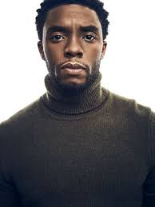

Chadwick boseman
Datos Personales
| Nombre |
Año de nacimiento |
Ciudad |
nacionalidad |
cónyuge |
| Chadwick Aaron Boseman |
29/11/1976 |
Carolina del Sur, EE.UU. |
Estadounidense |
Taylor Simone Ledward Boseman |
Perfil
Una persona bondadosa, humilde con mucha fortaleza y fe. Una persona cariñosa y protector, que inpira a otros y honra la historia y el legado de la comunidad afroamericana
Formación Académica
Título:Universidad de howard, dirección cinematográfica y British American Drama Academy en Oxford, Oxfordshire.
Título: T.L. Hanna High School
Especialidad: Lenguajes de Marcas y Sistemas de Gestión de Información
Año: 1995-2000
Experiencia
- instructor de drama en el Programa de Becarios "Schomburg Junior", aparición en la serie Third Watch.
- actor de 'T'Challa/Pantera Negra' en el Universo Cinematográfico de Marvel
- participación en series como: Law & Order (2004), CSI: NY (2006), y Lincoln Heights (2009)
Habilidades
Como actor:
- Actor talentoso capaz de dar vida a personajes icónicos y complejos
Físicas:
- Entrenamiento en artes marciales
- Estilo de vida saludable para mantenerme en forma para mis papeles como actor
Intelectuales:
- Una persona inteligente con intereses variados, como la arquitectura de joven
- Gran respeto por los héroes de la vida real que interpreto y los que me allanaron el camino
Idiomas:
- inglés
- xhosa (idioma ficticio para un papel en una pelicula)